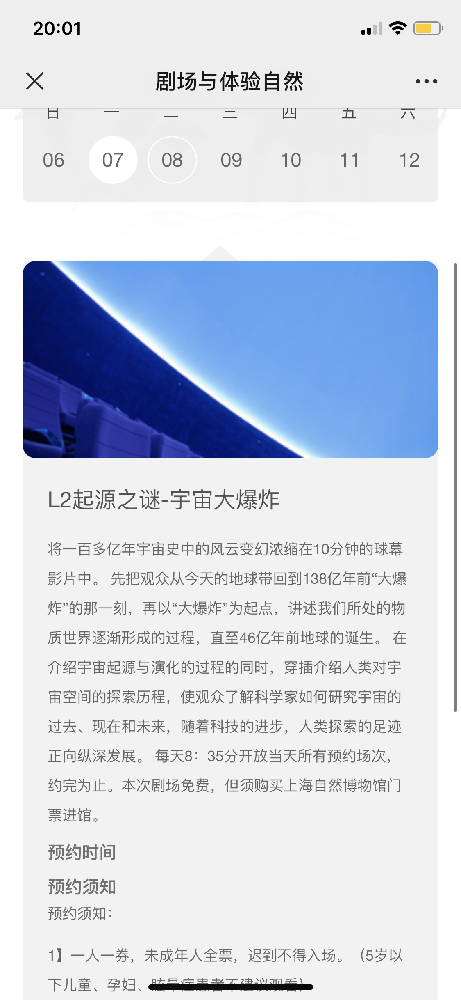
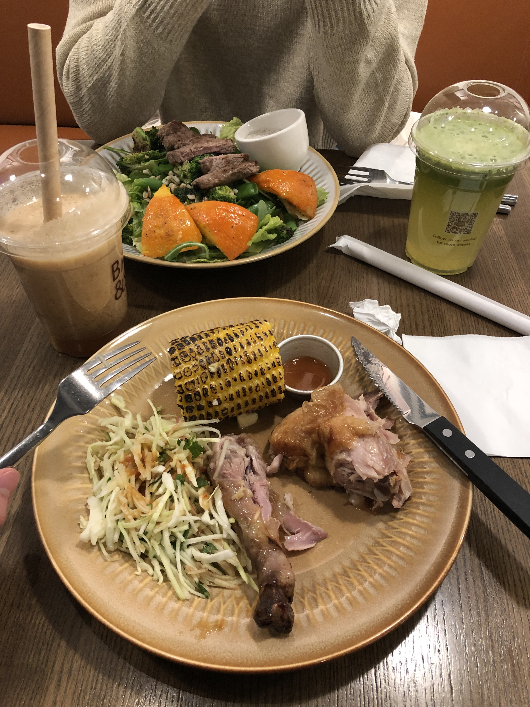
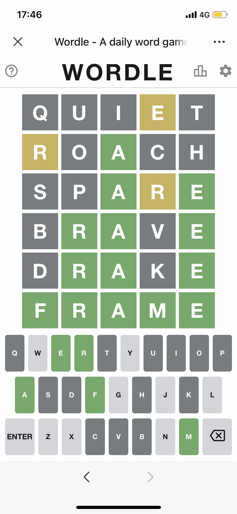

22-02-05
上一次认真地写小学生日记已经是9个月前了，那个时候头发还碰不到领子，养的蛇目菊还活得很好。回想这9个月时间，能称得上是认真生活的日子实在是不多。在正式恋爱之后，她对生活的热爱越发提高我对未来的期待值，但其中难免有偷懒或者得过且过的时光。在这段关系中，让我感到很惭愧的是，自己一直在被她“教育”着：剃胡子、不磨磨叽叽、改掉在恋爱中的缺点，而她的过于温柔和教养让我感觉自己并没有准备好进入这个角色。拥有丰富恋爱经历的我自认为比她更懂怎么恋爱，但事实证明我对这些一无所知。
晚上9点的滨江大道特别冷，我看到她眼泪滑下来的时候心都碎了。让喜欢的人因为自己哭真是一件特别丢人的事情，这时候我才清醒过来自己做的事情有多错。我第一次看到她哭，这也是她第一次在别人面前哭，我很不知所措，但是我知道一定是我做了很错的事让她走投无路，她才会这样做的。她一直很擅长掩饰自己的小情绪，为了不给我添麻烦，为了一直保持温柔，为了完成自己的人设——但这很大程度上阻止我去了解她真正的情绪和小剧场，哪怕是带有一丝毫不讲理的情绪，一点微不足道的小事，我也很愿意聆听。我说她“难以捉摸”，因为她从来不直接表达出她的感受，而是在内心为对方辩护一番后再作回应。
尽管哭得口罩都湿透了，害羞到需要扑在我怀里不被我看到，她还是逞强说自己很开心，不想让我难过之类的话。她说，我一直是一副很难过的样子，但不管她做什么都让我开心不起来，她很失落。我想如果两个人都不把话说明白的话，恋爱关系会很难健康地维持下去，所以某种程度上我想要她在我面前哭。在我和她之间始终存在着一些没有说明白的话，所以在我的死缠烂打下她终于肯告诉我一些她心中的忧虑——担心我怀念前女友，担心我对她的喜欢并不纯粹，担心学校里的漂亮女生。实际上都是我不难解决的问题，我对她的喜欢足以支撑这些。
短短2个月内把她弄伤心了两次，我想让她一直开心。但她要是一直开心会让我感到不真实、缺少亲切感，我想知道她除了开心以外的情绪，我想要她说给我听。有的时候我会故意说一些可能会惹她生气的话，但这反而会把她至于两难的境地：她要是生气我就会难过，她要是不生气我还是会难过。所以很明显是我做的不好，她没有理由一直和我说对不起。我没想过有一天自己会把“认真谈恋爱”列入今年的目标，也许我不该把颓废的生活态度带入一段两人共同负责的关系中。
今天还发生了一些值得铭记的小事，比如她妈妈在楼上偷拍我们两个，比如她猜wordle猜了好久，比如她说我戴了7年的帽子很丑，比如她问我要不要庆祝200天纪念日，比如我今天带错了好几次路，比如她的哭腔也很可爱。之前约会的时候肯定也发生了很多类似的事情，我很后悔我没有记录下来，希望自己晚一点忘掉。
最近真的太冷了，不过春天马上就要来了，希望下一次写小学生日记的时候可以不要这么悲伤🥲
宇宙大爆炸展厅，蓝蓝的
起源之谜
烤鸡，好好次
当时还没纽约时报收购的wordle，她做得好慢
评论区